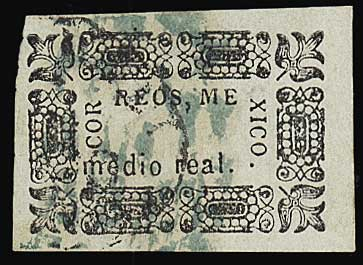
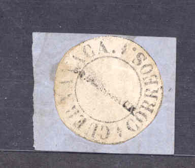
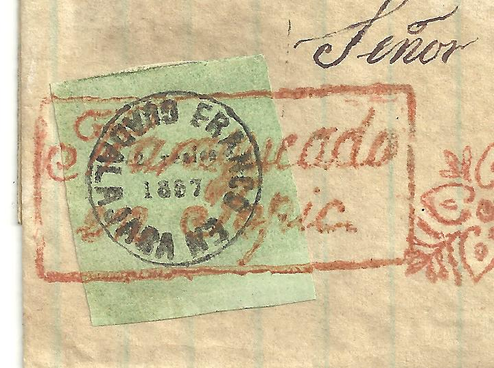
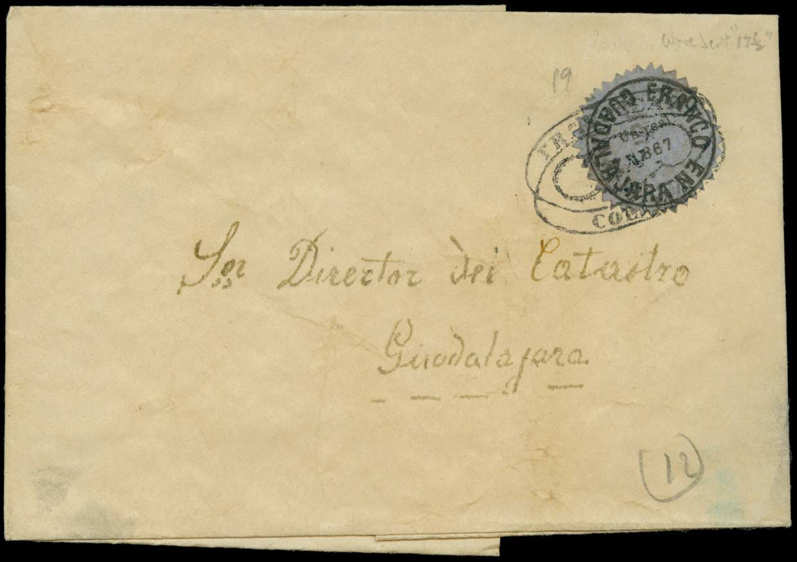
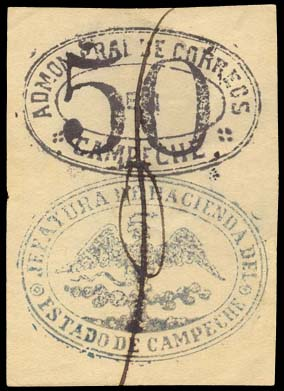
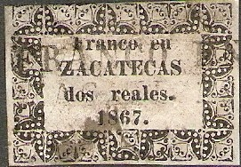

{kind=link}



Note: on my website many of the
pictures can not be seen! They are of course present in the
catalogue;
contact me if you want to purchase it.
Local stamps were issued in 1867 for the republican government. They exist for Cuernavaca and Guadalajara. The stamps of Chalco, Chiapas, Chihuahua, Monterey, Morelia, Oaxaca (don't confuse this issue with stamps of 1914!), Queretaro, Patzcuaro, Veracruz and Zacatecas are bogus issues. However, a Chihuahua postmaster stamp is listed in the book 'The World of Classic Stamps' by James A. Mackay on page 205. I still need a lot of images of this area, if you have any images (even of the bogus issues), please contact me!
1/2 r black on blue 1 r black on green 2 r black on red 4 r black on red 8 r black on red
Images of more (genuine?) stamps can be found in the Philatelic Record of 1891 (page 92-93). It shows some discoveries by G.A.Köster.
Forgery, in my view the letters are too large. I've also seen the
2 r of this particular forgery. The corner designs (especially
the one in the lower left corner) are badly done.

Forgery
I've been told that this is a 'reprint'.
This issue is sometimes considered 'dubious', it appears that there exist genuine Chiapas stamps.

2 r black (no value indicated)
Value of the stamps |
|||
vc = very common c = common * = not so common ** = uncommon |
*** = very uncommon R = rare RR = very rare RRR = extremely rare |
||
| Value | Unused | Used | Remarks |
| 2 r | ? | RRR | |


Certified genuine.
With date 1867
1/2 r ('MEDIO') black
1 r black
2 r black
4 r black
1 P black
With date 1868

1 r black 2 r black
All these stamps exist on blue, green, grey and lilac paper. They were created with the help of a cancelling device.

These stamps exist with a round perforation (serrates) as shown
here. This stamp might be a forgery. Genuine serrates were
machine-made.
These stamps can also be found with a "GUADALAJARA" district overprint (in a straight line as it can be found on 'ordinary' stamps).
Value of the stamps |
|||
vc = very common c = common * = not so common ** = uncommon |
*** = very uncommon R = rare RR = very rare RRR = extremely rare |
||
| Value | Unused | Used | Remarks |
| All values | R to RRR | RR to RRR | |
Attention: many forgeries of these stamps exists (I'm not quite sure if the above stamps are genuine!). The book Album Weeds mentions already six forgeries of the 1867 issue and another six of the 1868 issue (in the early 20th century!), three of them with the 'F' of 'FRANCO' resembling and ordinary 'F'; the 'F' should look like an 'E' with a small portion of the lower leg removed. Album Weeds also mentions three forgeries with the correct 'F'. Examples of some forgeries:

Two primitive forgeries with a normal 'F'; they could be the
forgeries known as Berlin, Leipzig or London forgeries. Note the
very strange '1' in '1867'. The catalogue of Placido
Ramon de Torres "Album Illustrado para Sellos de
Correo" of 1879 also has a very similar image on page 215
(information passed to me thanks to Gerhard Lang, 2016).
(Forgeries)
(Some forgeries with cancel 'ABRIL 2 1867', I have also seen the
1/2 r value of this forgery)
Forgery.
Forgeries with no extension of the right bottom part of the
"F" of "FRANCO" as the genuine stamps have.
Fournier also made forgeries of these stamps (both 1867 and 1868 issue).
The following forgeries were made by the forger Oswald Schroeder:

Schroeder made forgeries of the '1867 2 reales' and '1867 Un Peso' values, but also the '1868 un real' and the '1868 2 reales' values. I've seen them on different coloured papers.

Raoul de Thuin forgery.

On letter, certified genuine.
Image taken from the Bellows book (black and white image). Note
the additional local "*CAMPECHE*" surcharge on the left
stamp (just below the upper oval) claimed to be the 1867 by
Bellows and the right stamp the 're-issue' of 1876.
In 1876 (or possibly 1867 with a reissue in 1876 as mentioned in Bellows?) a special stamp was issued for Campeche, two ellipses, the upper one with a value and the lower one with an eagle. The following values exist: 5 c black and blue, 25 c black and blue and 50 c black and blue. These stamps are extremely rare. Three genuine 5 c stamps are also shown in the Ferrari auctions (IV, numbers 591-593). Also the book of Bellows (see below) has many illustrations.
Value of the stamps |
|||
vc = very common c = common * = not so common ** = uncommon |
*** = very uncommon R = rare RR = very rare RRR = extremely rare |
||
| Value | Unused | Used | Remarks |
| All values | ? | RRR | |
From Bellows: The two ellipses of this stamp were handstamped separately. The upper oval has dimensions 22 1/2 mm high and 36 mm broad. The lower oval is usually quite blur, while the upper one is sharp. The figures of value are in black (probably all stamps with figures of value in blue are forgeries). The lower oval is printed in blue (indigo, but different shades of blue exist). The lower oval often has an indentation left to the small circle on the left hand side of the design. The upper oval is usually in (very dark) blue color, but in light blue in the 're-issue' of 1876. A penstroke was applied connecting the two ovals (usually a pentroke consisting of two parts: a circle and a vertical line, possibly a "F" and "O" as abbreviation for "FRANCO"). This penstroke was usually applied to the left hand side of the stamp. A lead-pencil was used to place a rectangle around the stamp (for ease of separation with scissors).
Forgeries exist, I know of forgeries made by Raoul deThuin. Covers adressed to Ignacio Hernandez are forgeries (genuine letters with forged stamps added).

A forgery made with the genuine dies exists with the lower oval printed in the color black.
Literature:
* 'Mexico los Timbres Provisorios de Campeche' by Eduardo Aguirre
1914, 35 pages (in Spanish)
* 'Mexico les Timbres Provisoires de Campeche' by Eduardo Aguirre
1914, 35 pages (in French)
* 'Campeche Some notes on the most remarkable stamps ever issued'
Walter Clarke Bellows (1909); also available from archive.org.

A forgery of the upper ellipse. The genuine inscription is always
'PRAL' (for 'Principal'), many forgeries as well as catalogue
illustrations have the erroneous inscription "CRAL"
(see the book of Bellows, it appears to be part of the forgery
shown on page 22). More forgeries are described on page 87 of
this book.
A bogus issue for Morelos:
I've seen another value of 2 c black on yellow, with the star behind the value in blue. As in the above stamp, the word "MORELOS" seems to be printed seperately. Also, 2 c black on yellow, 4 c black on orange and 10 c black on grey (all with violet star).
Bogus issue for Chihuahua?
Another bogus issue: "ENALAMOS FRANCO" in a circle with an eagle in the center, furthermore the text 'Abril 8 de 1879' below it and '25 ' to the left of it.
Bogus provisional issue for Alamos; A similar label can be found
in the book 'Campeche Some notes on the most remarkable stamps
ever issued' Walter Clarke Bellows (1909).



Chalco bogus issues. Even in different types?
5 c violet 10 c red 50 c green
Value of the stamps |
|||
vc = very common c = common * = not so common ** = uncommon |
*** = very uncommon R = rare RR = very rare RRR = extremely rare |
||
| Value | Unused | Used | Remarks |
| 5 c | RR | RR | |
| 10 c | RR | RR | |
| 50 c | RR | RR | |
{kind=link}
{kind=link}
{kind=link}